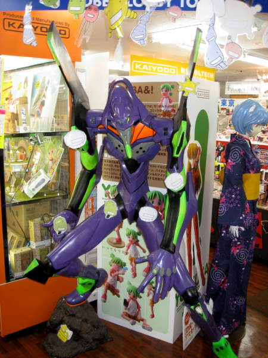
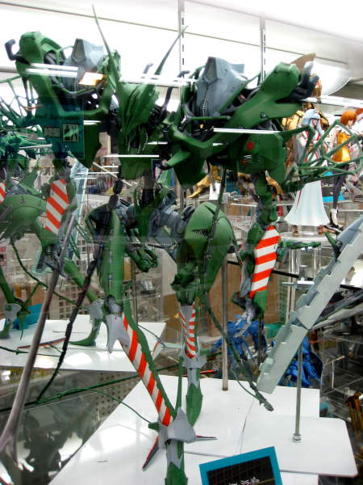
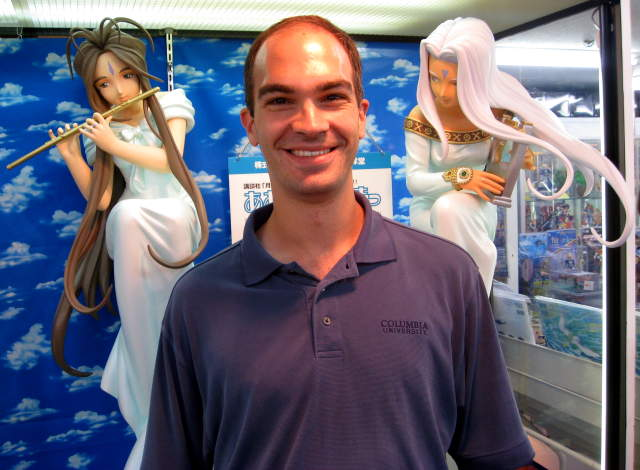
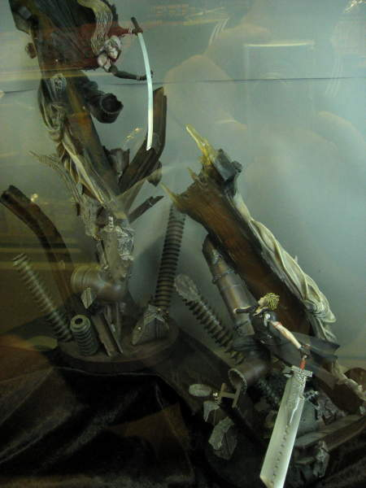
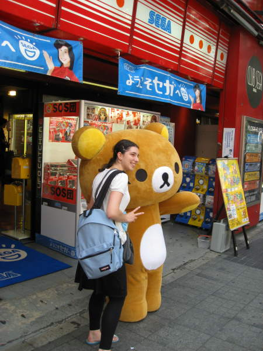
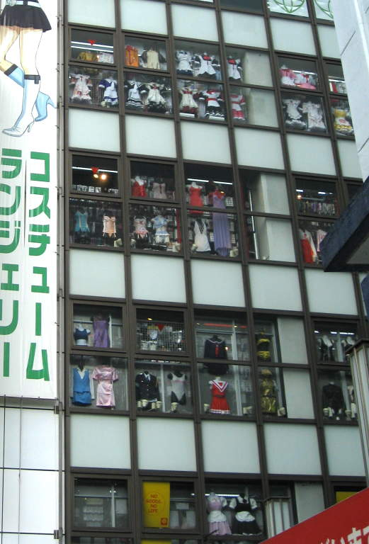
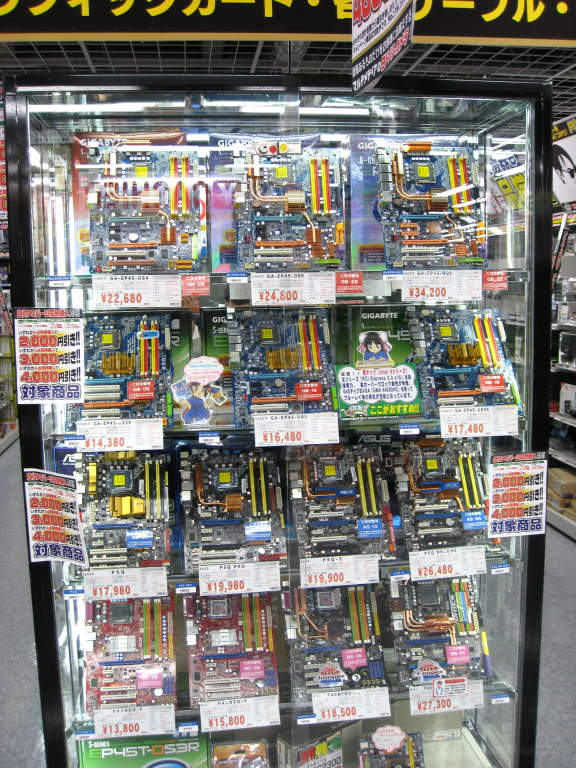
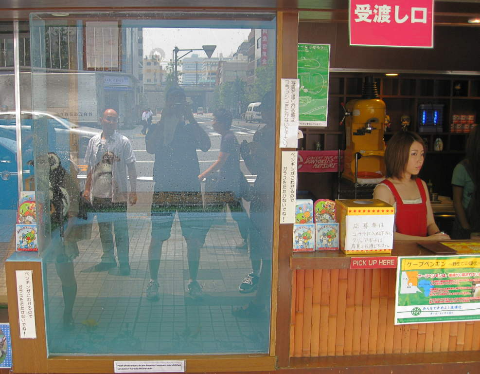

Akihabara
Akihabara
is a city for geeks. I can't get around just saying that
outright. Being a geek, in my opinion, is not a bad thing, but
this was a city for geeks. This is a six foot high replica of a
war-robot/creature found in the Japanese animation (anime) called
"Evangelion".

Some
stores had models of anime characters for sale. They range from
cheap and simple to madly expensive and intricately designed and
painted. This model runs well over one-thousand dollars.

Please do not blackmail me with this.

A battle scene is depicted in this ostentatious model.

Posing with the teddybear creature.

Save trees! Don't print catalogs. Use buildings instead.

This motherboard kiosk is almost hypnotic.

This
is a picture of penguins, to the left. Hard to see behind the
glass. Nothing else for you to see here. Move along.
Back